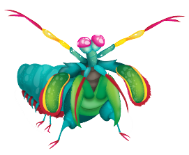

Um verdadeiro ninja tropical
Você não precisa ir até o Japão para ver um ninja em ação. Na verdade, basta você ter
uma carteira de mergulhador certificado e alguns tanques de mergulho para explorar as
costas dos mares tropicais e subtropicais entre a micronésia e a África Oriental
(pelo menos é mais próximo do Brasil!). A lagosta-boxeadora vive em tocas de corais
e se alimenta de crustáceos. Justamente para quebrar a carcaça do seu alimento,
são capazes de
Não espere ver uma lagosta-boxeadora em um aquário!
Se você ama espécies marinhas e se fascinou pela explosão de cores do Stomatopoda,
provavelmente já planejou sua próxima visita a um aquário. Mas já adianto que as
suas expectativas serão frustradas. Os aquários não mantém este bichinho por lá.
Primeiro porque seus hábitos violentos e sanguinários o tornam um vizinho aterrorizante
para outras espécies. Em segundo lugar, o golpe potente da lagosta-boxeadora pode
Um animalzinho que facilmente se alistaria no exército
A estrutura da lagosta-boxeadora é tão robusta que os cientistas estão estudando sua estrutura celular para desenvolver armaduras para as tropas de combate. Os Estados Unidos também estão correndo contra o tempo para finalizar sua pesquisa para a criação de aeronaves militares mais resistentes a partir do mesmo revestimento das patas boxeadoras.almente.